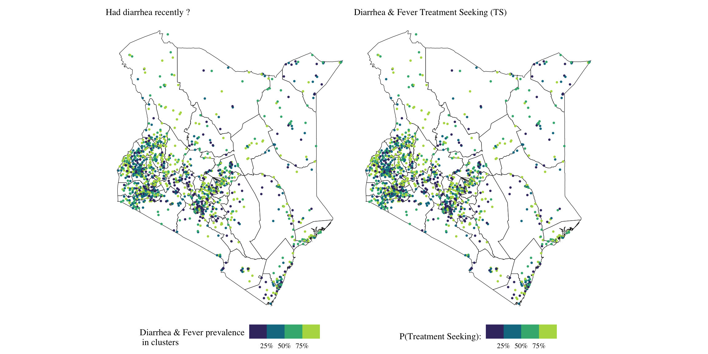
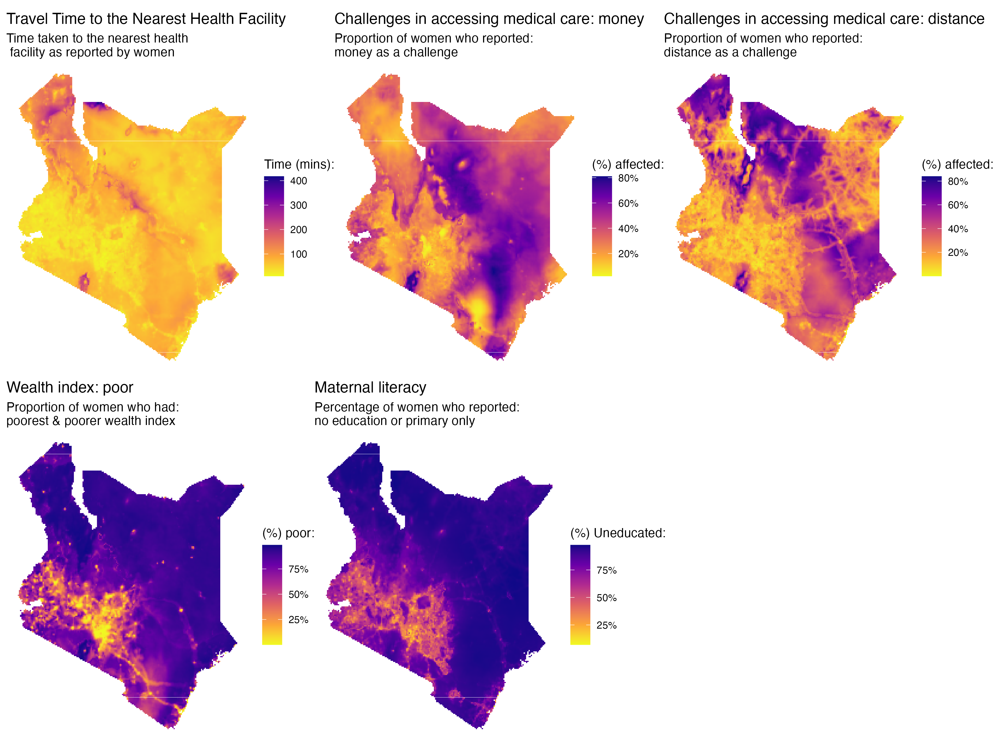
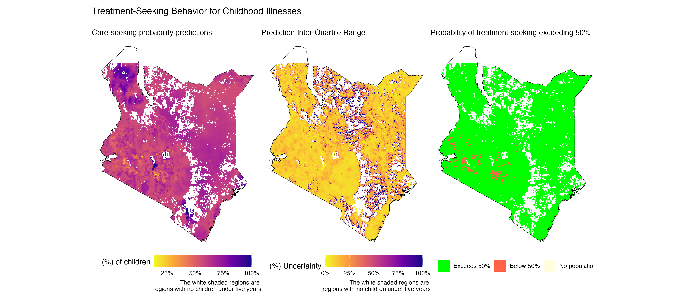
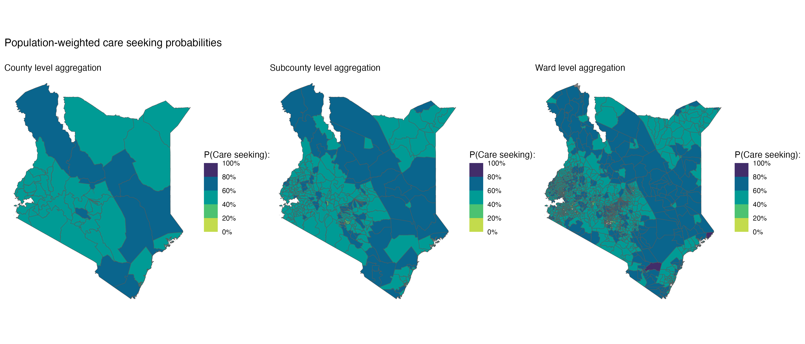
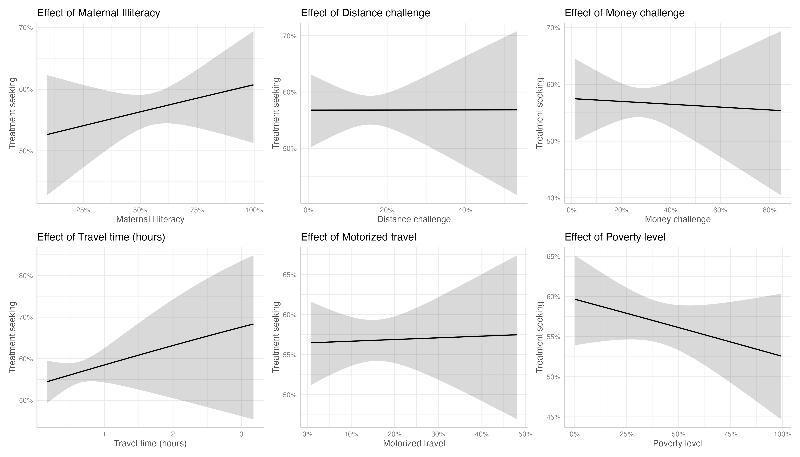

Introduction
Childhood illnesses remain a significant contributor to under-five mortality globally, with diarrhea, malaria, and acute respiratory infections (ARI) among the leading causes of death in this age group1. A comprehensive analysis of global, regional, and national causes of under-5 mortality from 2000-2019 revealed that lower respiratory infections accounted for approximately 10% of all under-five deaths, while diarrhea was responsible for about 8.5% of these fatalities2. The burden is slightly higher in low- and middle-income countries (LMICs), where diarrhea contributes to approximately 9% of child mortality, and ARIs account for about 13%. Recent data from the Institute for Health Metrics and Evaluation (2021)3 for Kenya, indicates that diarrheal diseases have a mortality rate of 81.05 per 100,000 (95% CI: 59.97 - 106.02) for children under five years, while lower respiratory infections (LRIs) exhibit a mortality rate of 63.11 per 100,000 (95% CI: 49.08 - 80.78) in the same age group.
1 UNICEF Data. (2022, March). “Under-five mortality” Retrieved from https://data.unicef.org/topic/child-survival/under-five-mortality/
2 Perin, J., Mulick, A., Yeung, D., Villavicencio, F., Lopez, G., Strong, K. L., … & Liu, L. (2022). Global, regional, and national causes of under-5 mortality in 2000–19: an updated systematic analysis with implications for the Sustainable Development Goals. The Lancet Child & Adolescent Health, 6(2), 106-115.
3 https://vizhub.healthdata.org/gbd-compare/
Care-seeking for childhood illnesses in Kenya is often delayed or absent due to various interconnected factors. Caregivers’ understanding of diseases, perception of illness severity and persistence, and financial constraints (including direct: medical costs and indirect: lost work time) significantly influence their decisions4. Education levels and cultural beliefs also play a role, often leading to the use of home remedies instead of formal medical care5. Geographical access to healthcare facilities is another critical factor. Recent research shows that 89.4% and 80.5% of Kenya’s 2021 population could reach the nearest public and private health facilities within an hour, respectively. While 27 out of 47 counties have over 90% of their population within an hour of a public health facility, significant disparities remain, especially in rural areas6. People living in urban areas or close to healthcare facilities are more likely to seek timely medical treatment for childhood illnesses compared to those in rural areas\(^4\), highlighting the importance of geographical accessibility in care-seeking behavior.
4 Wambui, W. M., Kimani, S., & Odhiambo, E. (2018). Determinants of Health Seeking Behavior among Caregivers of Infants Admitted with Acute Childhood Illnesses at Kenyatta National Hospital, Nairobi, Kenya. International journal of pediatrics, 2018, 5190287. https://doi.org/10.1155/2018/5190287
5 Opuba EN, Owenga JA, Onyango PO. Home-based care practices and experiences influencing health-seeking behaviour among caregivers of children diagnosed with pneumonia in Endebess Sub-County, Kenya. Journal of Global Health Reports. 2021;5:e2021098. doi:10.29392/001c.29573
6 Moturi AK, Suiyanka L, Mumo E, Snow RW, Okiro EA, Macharia PM. Geographic accessibility to public and private health facilities in Kenya in 2021: An updated geocoded inventory and spatial analysis. Front Public Health. 2022 Nov 3;10:1002975. doi: 10.3389/fpubh.2022.1002975. PMID: 36407994; PMCID: PMC9670107.
The aim of this article is to:
Estimate the probabilities of seeking treatment for diarrhea and fever in Kenya, at a \(5 \ km^2\) spatial resolution, and aggregated at the ward, sub-county, and county levels.
Examine the relationship between care-seeking probabilities for childhood illnesses and access to medical care and treatment for women of reproductive age in Kenya, literacy levels, wealth disparities, and travel times and mode of travel to health facilities.
Data & methods
Data
The data for this analysis are drawn from the Kenya Demographic and Health Surveys 2022 (KDHS 2022)7.
7 KNBS and ICF. 2023. Kenya Demographic and Health Survey 2022. Nairobi, Kenya, and Rockville, Maryland, USA: KNBS and ICF.
The KDHS is a nationally representative household survey conducted periodically to collect data on population demographics, health, and nutrition. The primary aim of these surveys is to monitor trends in key indicators within developing countries which lack a robust vital statistics collection and monitoring system.
The survey uses the most recent census national master sampling frame, which divides Kenya into 47 administrative units (counties), each further separated into 92 strata based on rural and urban specifications (Nairobi and Mombasa only have urban areas, which is why the total # of strata is 92 not 94). Samples were selected within each stratum using a two-stage process: First, clusters (enumeration areas) were selected independently from each stratum. In the second stage, 25 households are randomly selected from each cluster. This sampling design ensures representative estimates at the national, county, and rural-urban levels.
For this analysis, the survey datasets provided information on treatment seeking for a total of 4,743 children under five years. A map showing diarrhea, and fever prevalence and treatment seeking for the two aggregated at the cluster level is shown below.
Methods
We utilize six covariates in modeling care-seeking behavior for diarrhea and fever in children under five. These covariates include:
- Travel time (minutes to the nearest health facility)
- Health accessibility (1) (proportion of women experiencing challenges in accessing healthcare due to money)
- Health accessibility (2) (proportion of women experiencing challenges in accessing healthcare due to distance)
- Mode of travel (proportion of women using motorized transport to access the nearest health facility)
- Wealth (proportion of women from poor wealth index bracket)
- Illiteracy levels in women (proportion of women with primary education or less)
These six covariates were first estimated using a two-step model-based geostatistics (MBG) approach to obtain estimates at a \(5 km^2\) spatial resolution. This initial step considered the following selected environmental covariates:
| Variable | Description | Source |
|---|---|---|
| Avg-Temp | The average temperature in degree celsius | WorldClim version 2.1 climate data |
| Diff-Temp | The temperature difference between the minimum average and maximum average | WorldClim version 2.1 climate data |
| Precipitation | Total precipitation in mm | WorldClim version 2.1 climate data |
| Distance to water bodies | Distance to ESA-CCI-LC inland water (2012) | WorldPop (www.worldpop.org) |
| Night-time light | Resampled VIIRS night-time light | WorldPop (www.worldpop.org) |
| Population density | Unconstrained estimated population density per grid cell, UN Adjusted for 2020. | WorldPop (www.worldpop.org) |
| Travel time to cities | Travel time to cities with populations of 10k-20k people in 2015 | https://doi.org/10.6084/m9.figshare.7638134.v4 |
In the first step, Multivariate Adaptive Regression Spline models (MARS) were used in modelling the 6 covariates as a function of all the environmental covariates and their first-order interaction terms. The models were built to allow for a potential 500 knots in the features, and pruning of the model was done using forward selection. The predictions from the MARS model were then used as offsets in a geostatistical model (second step) in order to obtain the smoothed effects over the entire grid.
For travel time, which exhibits a skewed distribution, we employed a gamma distribution model:
\[ \log(\text{Travel Time}_k) = \mathbf{Z}_k + \psi(x_k) \]
For the remaining covariates (health accessibility (money & distance), mode of travel, wealth index, and illiteracy levels), we applied a binomial likelihood model.
\[ \text{logit}(p_k) = \mathbf{Z}_k + \psi(x_k) \]
Where: \(\mathbf{Z}_k\) is an offset term which is the linear predictor obtained from the fitted MARS model and \(\psi(x_k)\) is a spatial random effect modeled as a zero-mean Gaussian process with a Matérn covariance function: \(\psi(x_k) \sim N(0, \Sigma)\).
Results
These six modeled map surfaces were then used as covariates in the models for care-seeking probabilities.

To model the response variables related to care-seeking for diarrhea and fever, we used a generalized linear geostatistical model with a binomial response distribution. Let \(Y_k\) be the number of women in location \(x_k, \ (k = 1, ..., n)\) who sought treatment for their children (under five) due to diarrhea or fever. We assume:
\[ Y_k \ | \ \mu(x_k) \sim \text{Binomial}(N_k, \ \mu(x_k)) \] where:
\(N_k\) is the total number of women in location \(k\). \(\mu(x_k)\) is the probability parameter of the binomial distribution, with \(0 < \mu(x_k) < 1\).
The probability \(\mu(x_k)\) is linked to the covariates and spatial effects through a logit link function:
\[ \mathbf{log}(\frac{\mu(x_k)}{1 - \mu(x_k)}) = \mathbf{X}_k \boldsymbol{\beta} + \psi(x_k) \]
where:
\(\mathbf{X}_k\) is the vector of the six estimated covariates at location \(x_k\), and \(\boldsymbol{\beta}\) is the vector of corresponding regression coefficients (including the intercept term). \(\psi(x_k)\) represents a spatial random effect modeled as a zero-mean Gaussian process with Matérn covariance function: \(\psi(x_k) \sim N(0, \Sigma)\).
For summarizing the care-seeking probabilities, we extracted the mean probabilities along with the interquartile range (IQR) as a measure of uncertainty in predictions. The estimates were also aggregated at the ward, sub-county and county level using population-weighting.

The modelled map surface indicates that care seeking probabilities ranged from 0 to 1, with a median probability of 0.6, and an average probability of 0.51. Care seeking was high in the northern regions of Kenya such as in Turkana, and low in the central parts of Kenya such as in Nairobi. The exceedance map shows that majority of the parts in Kenya have a care seeking probability above 0.5.
The aggregated map surfaces shown below indicate that at the county level, treatment seeking is high in the coutnies: Turkana, Samburu, Isiolo, Garissa, Tana-river, Taita taveta, Kwale and Murang’a. The rest of the counties have treatment seeking probabilities ranging from 40% to 60%. the sub-county level map and ward-level map further highlight this finding.

The effects of the health accessibility covariates on the treatment seeking probabilities were extracted from a GLM model fitted on the survey data (aggregated at the cluster level). The conditional effect plots are shown below:

Higher levels of female illiteracy are associated with an increased probability of seeking treatment. There is a slight negative association between money-related challenges and seeking treatment, and a strong negative relationship between poverty levels and treatment seeking. Contrary to expectations, longer travel times are associated with a higher likelihood of seeking treatment. The variables: distance challenges and access to motorized transport show little to no impact on treatment-seeking behavior, as reflected in the flat prediction lines.
This study modeled the probabilities of treatment seeking for childhood illnesses in Kenya using model-based geostatistical methods. The findings reveal an interesting trend: treatment-seeking probabilities are highest in northern counties such as Turkana, Isiolo, and Samburu, while much of the rest of Kenya exhibits moderate probabilities, ranging between 40% and 60%. Additionally, the study explored how health accessibility factors relate to treatment seeking.
A key limitation of this research is the restricted sample size. The DHS data on treatment seeking was collected only from women whose children experienced illness in the two weeks preceding the survey, significantly reducing the number of observations. Similarly, data on health accessibility variables were available for only a subset of respondents. These limitations likely contributed to the low precision of the estimated relationships, as evidenced by the wide confidence intervals around the model’s predictions.
Although some of the results were counterintuitive, they highlight the complexity of healthcare access and utilization. Further research is needed to better understand the relationships between health accessibility and treatment seeking for childhood illnesses.
References
Data references
Fick, S.E. and R.J. Hijmans, 2017. WorldClim 2: new 1km spatial resolution climate surfaces for global land areas. International Journal of Climatology 37 (12): 4302-4315.
WorldPop (www.worldpop.org - School of Geography and Environmental Science, University of Southampton; Department of Geography and Geosciences, University of Louisville; Departement de Geographie, Universite de Namur) and Center for International Earth Science Information Network (CIESIN), Columbia University (2018). Global High Resolution Population Denominators Project - Funded by The Bill and Melinda Gates Foundation (OPP1134076). https://dx.doi.org/10.5258/SOTON/WP00675
Nelson, Andy (2019). Travel time to cities and ports in the year 2015. figshare. Dataset. https://doi.org/10.6084/m9.figshare.7638134.v4
Weiss, D., Nelson, A., Gibson, H. et al. A global map of travel time to cities to assess inequalities in accessibility in 2015. Nature 553, 333–336 (2018). https://doi.org/10.1038/nature25181
Package references
Havard Rue, Sara Martino, and Nicholas Chopin (2009), Approximate Bayesian Inference for Latent Gaussian Models Using Integrated Nested Laplace Approximations (with discussion), Journal of the Royal Statistical Society B, 71, 319-392.
Thiago G. Martins, Daniel Simpson, Finn Lindgren and Havard Rue (2013), Bayesian computing with INLA: New features, Computational Statistics and Data Analysis, 67(2013) 68-83
Finn Lindgren, Havard Rue (2015). Bayesian Spatial Modelling with R-INLA. Journal of Statistical Software, 63(19), 1-25. URL http://www.jstatsoft.org/v63/i19/.
Wickham H, Averick M, Bryan J, Chang W, McGowan LD, François R, Grolemund G, Hayes A, Henry L, Hester J, Kuhn M, Pedersen TL, Miller E, Bache SM, Müller K, Ooms J, Robinson D, Seidel DP, Spinu V, Takahashi K, Vaughan D, Wilke C, Woo K, Yutani H (2019). “Welcome to the tidyverse.” Journal of Open Source Software, 4(43), 1686. doi:10.21105/joss.01686 https://doi.org/10.21105/joss.01686.
R Core Team (2023). R: A Language and Environment for Statistical Computing. R Foundation for Statistical Computing, Vienna, Austria. https://www.R-project.org/.
Pebesma, E., & Bivand, R. (2023). Spatial Data Science: With Applications in R. Chapman and Hall/CRC. https://doi.org/10.1201/9780429459016
Pebesma, E., 2018. Simple Features for R: Standardized Support for Spatial Vector Data. The R Journal 10 (1), 439-446, https://doi.org/10.32614/RJ-2018-009
Hijmans R (2023). raster: Geographic Data Analysis and Modeling. R package version 3.6-26, https://CRAN.R-project.org/package=raster.
Kuhn M, Wickham H, Hvitfeldt E (2024). recipes: Preprocessing and Feature Engineering Steps for Modeling. R package version 1.0.10, https://CRAN.R-project.org/package=recipes.
Karatzoglou A, Smola A, Hornik K (2023). kernlab: Kernel-Based Machine Learning Lab. R package version 0.9-32, https://CRAN.R-project.org/package=kernlab.
Wickham H, Miller E, Smith D (2023). haven: Import and Export ‘SPSS’, ‘Stata’ and ‘SAS’ Files. R package version 2.5.4, https://CRAN.R-project.org/package=haven.
Alexander Jordan, Fabian Krueger, Sebastian Lerch (2019). Evaluating Probabilistic Forecasts with scoringRules. Journal of Statistical Software, 90(12), 1-37. DOI 10.18637/jss.v090.i12
Mahoney M. J., Johnson, L. K., Silge, J., Frick, H., Kuhn, M., and Beier C. M. (2023). Assessing the performance of spatial cross-validation approaches for models of spatially structured data. arXiv. https://doi.org/10.48550/arXiv.2303.07334
Other references
UNICEF Data. (2022, March). “Under-five mortality” Retrieved from https://data.unicef.org/topic/child-survival/under-five-mortality/
Perin, J., Mulick, A., Yeung, D., Villavicencio, F., Lopez, G., Strong, K. L., … & Liu, L. (2022). Global, regional, and national causes of under-5 mortality in 2000–19: an updated systematic analysis with implications for the Sustainable Development Goals. The Lancet Child & Adolescent Health, 6(2), 106-115.
Wambui, W. M., Kimani, S., & Odhiambo, E. (2018). Determinants of Health Seeking Behavior among Caregivers of Infants Admitted with Acute Childhood Illnesses at Kenyatta National Hospital, Nairobi, Kenya. International journal of pediatrics, 2018, 5190287. https://doi.org/10.1155/2018/5190287
Opuba EN, Owenga JA, Onyango PO. Home-based care practices and experiences influencing health-seeking behaviour among caregivers of children diagnosed with pneumonia in Endebess Sub-County, Kenya. Journal of Global Health Reports. 2021;5:e2021098. doi:10.29392/001c.29573
Moturi AK, Suiyanka L, Mumo E, Snow RW, Okiro EA, Macharia PM. Geographic accessibility to public and private health facilities in Kenya in 2021: An updated geocoded inventory and spatial analysis. Front Public Health. 2022 Nov 3;10:1002975. doi: 10.3389/fpubh.2022.1002975. PMID: 36407994; PMCID: PMC9670107.
KNBS and ICF. 2023. Kenya Demographic and Health Survey 2022. Nairobi, Kenya, and Rockville, Maryland, USA: KNBS and ICF.